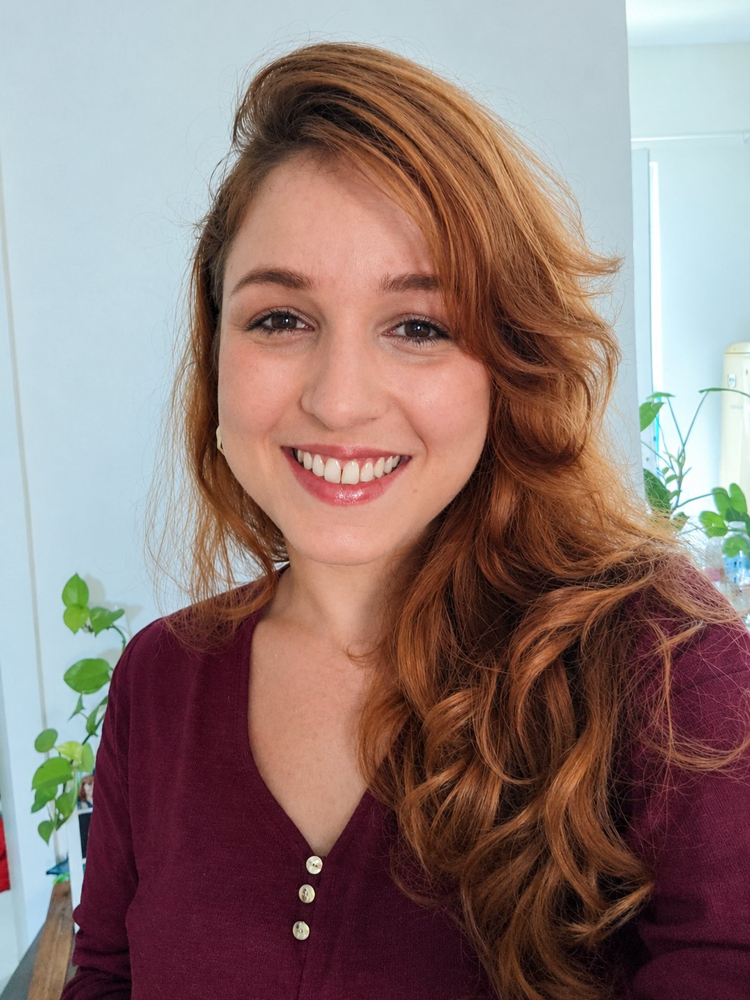
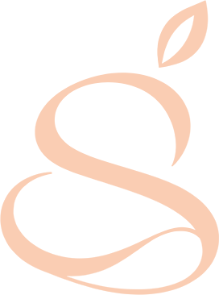

Mulheres
Em todas as fases da vida: ciclo menstrual, saúde hormonal, gestação, pós-parto, climatério e as rotinas que mudam com cada uma delas.
Nutrição humana · conexão · natureza

Um cuidado que começa pela sua história: rotina, emoções, sentidos e o jeito único como a comida entra na sua vida.
Stefani Rafaeli Zopellaro Nutricionista · CRN-X 00000
Comida não é só nutriente. É memória, textura, cheiro, cansaço, afeto, rotina e, às vezes, também desafio. Um plano que ignora tudo isso raramente cabe na vida real.
Cuidado nutricional é, antes de tudo, conexão humana: duas pessoas, uma conversa honesta e um caminho possível. Aqui ninguém é avaliado pela capacidade de seguir regras.

Foto sobre mimassets/sobre.jpg · 4:5Sobre mim
Sou nutricionista e acredito que a alimentação só faz sentido quando conversa com a vida de quem come. O centro do meu trabalho é a saúde da mulher, em diferentes fases e momentos, e atendo homens com o mesmo cuidado e a mesma escuta.
Tenho um olhar especial para a experiência alimentar de pessoas neurodivergentes: seletividade, hiperfoco, rotinas rígidas, sensibilidade a texturas e cheiros. Esse conhecimento aprofunda a minha prática, mas não limita quem eu atendo.
Como eu cuido
Nenhuma delas é uma regra para você seguir. São compromissos meus.
A primeira consulta é uma conversa de verdade. Quero entender seu dia, sua história e o que a comida representa para você antes de propor qualquer coisa.
Gosto, textura, horário, orçamento, energia disponível. Cada detalhe entra no cuidado, porque ninguém come no vácuo.
Você participa das decisões. A ideia é construir repertório e confiança para escolher, sem depender de regras que não cabem na sua semana.
O cuidado é baseado em evidências, explicado em linguagem simples e livre de discursos de restrição, perfeição ou culpa.
Quem eu atendo
Em todas as fases da vida: ciclo menstrual, saúde hormonal, gestação, pós-parto, climatério e as rotinas que mudam com cada uma delas.
Com a mesma escuta e o mesmo plano individualizado. Rotina, saúde, relação com a comida: o cuidado começa pelo que é importante para você.
Talvez você se reconheça em alguma destas situações:
A consulta
Você me chama pelo WhatsApp e conversamos sobre o que procura e qual formato faz mais sentido, particular ou valor social.
Um encontro sem pressa para conhecer sua história, rotina, preferências e queixas.
Orientações pensadas para a sua realidade, com linguagem clara e espaço para ajustes.
Retornos para ajustar o caminho junto com você, no seu ritmo.
“Pela primeira vez eu me senti ouvida numa consulta de nutrição, sem julgamento.”
“Ela respeitou o meu tempo e as minhas dificuldades com certos alimentos.”
“Linguagem leve, explicações claras e muita atenção a cada detalhe.”
Sim. O foco do meu trabalho é a saúde da mulher, mas atendo homens com a mesma escuta, o mesmo tempo de consulta e o mesmo plano individualizado. Isso vale tanto para o atendimento particular quanto para o valor social.
É uma consulta com valor reduzido para quem não consegue pagar o atendimento particular neste momento. Você me chama pelo WhatsApp, conversamos de forma simples e respeitosa sobre a sua situação e, havendo vaga no mês, agendamos. Quando as vagas estão preenchidas, você entra na lista de espera.
Não. O tempo de escuta, a qualidade e o acompanhamento são os mesmos. A única diferença é o valor.
Não. Se você tem diagnóstico, suspeita ou só percebe que a sua relação sensorial com a comida é diferente, esse olhar entra no cuidado, sem rótulos.
O cuidado é construído a partir da sua realidade e dos seus objetivos de saúde. O foco está na orientação individualizada, não em regras genéricas.
Atendo online, para qualquer cidade, e presencialmente em Cidade/UF. Os detalhes de horário e valores são combinados pelo WhatsApp.
Não. Cada pessoa responde de um jeito, e a ética profissional não permite promessas de resultado. O que eu garanto é um cuidado atento, individualizado e baseado em ciência.
Vamos conversar?
Ao enviar, o WhatsApp abre com a sua mensagem pronta. Respondo assim que possível, em horário comercial.